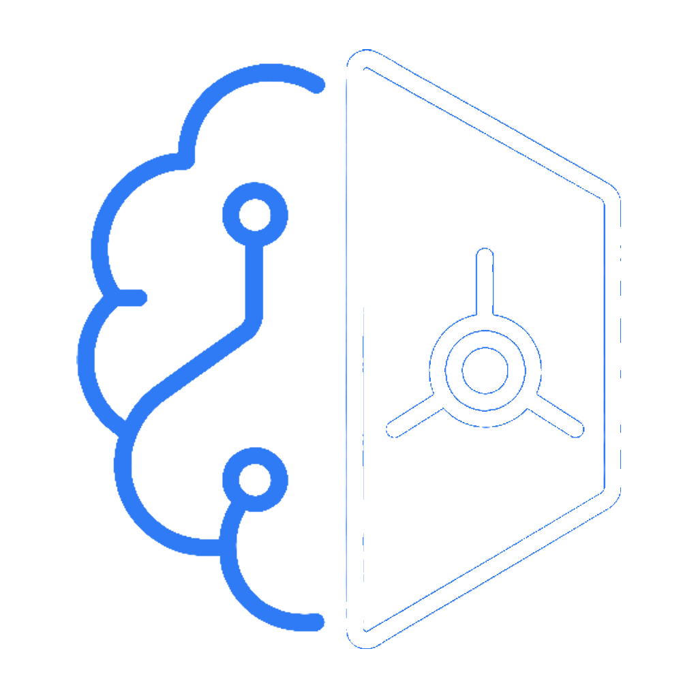
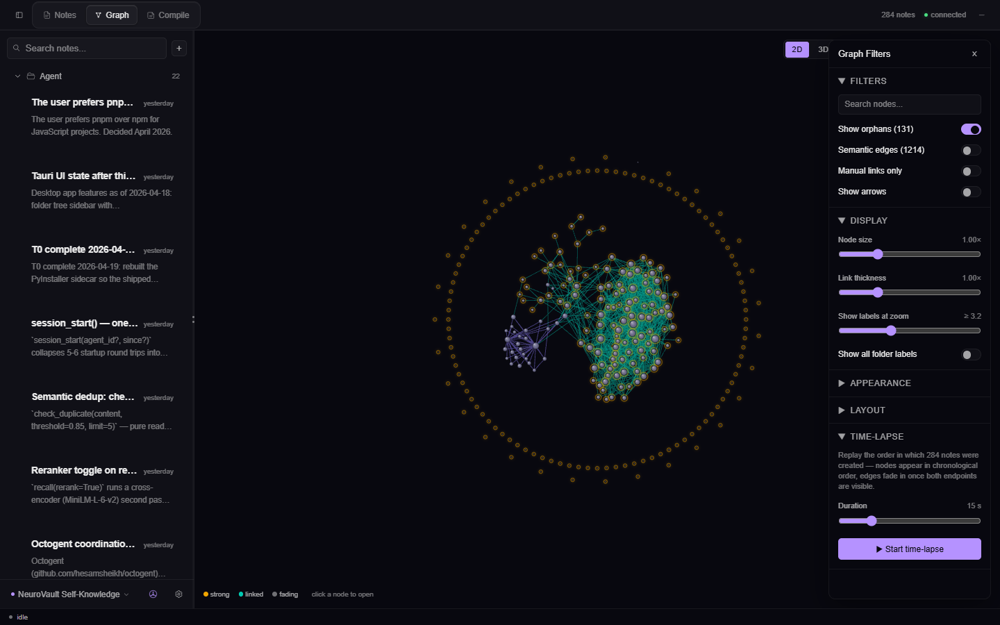
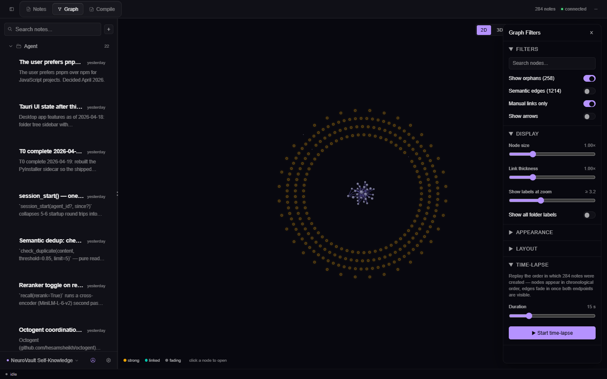
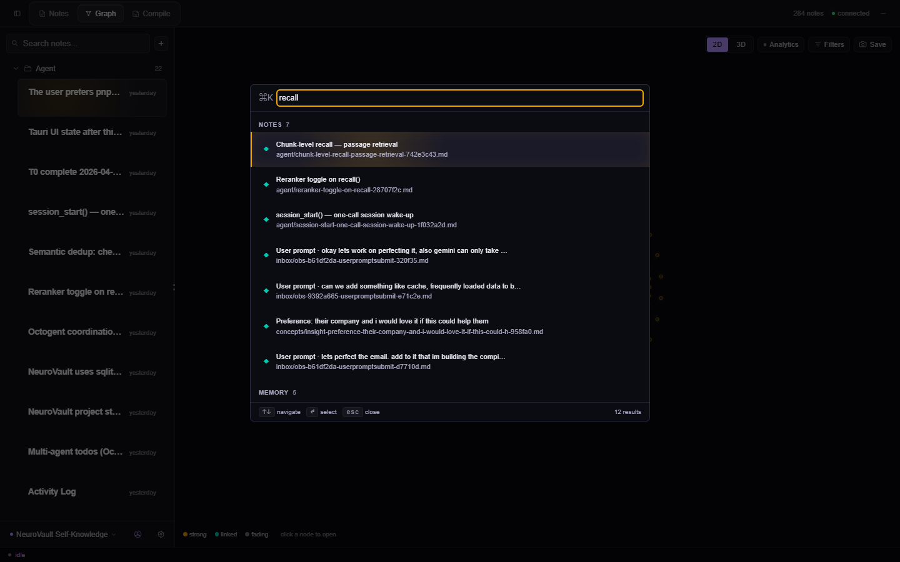
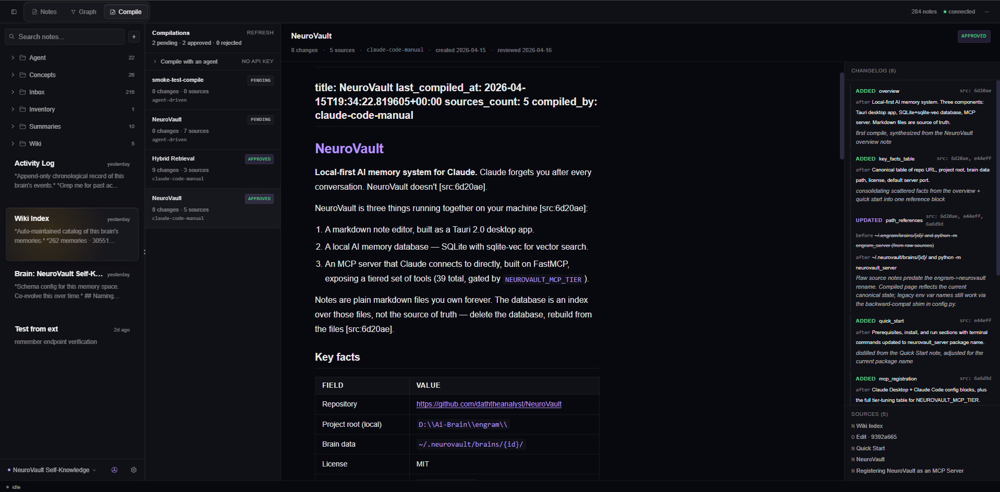
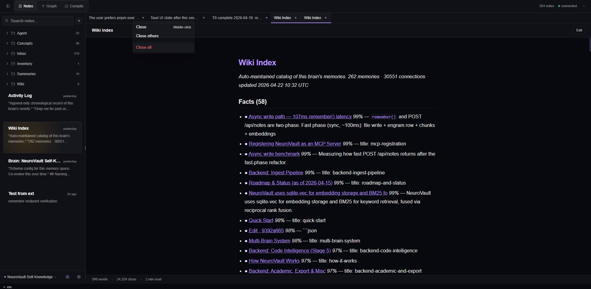

Never leaves your laptop
No cloud. No account. No telemetry. Just files.

DownloadClaude forgets you after every conversation. NeuroVault doesn't.
A local-first memory layer for AI agents. Notes, decisions, people, projects — captured once, recalled whenever any MCP-speaking agent asks. Analytics mode shows the structure of your brain at a glance: bigger nodes for what gets referenced most, soft tints for clusters of linked notes.
Every memory is a plain .md file on your disk. The database is
just an index. If the index ever breaks, we rebuild it from the files.
You own your brain.
No cloud. No account. No telemetry. Just files.
Every note is a node. Force-directed graph, typed links, live.
Semantic + keyword + graph search, fused. Weighted by recency.
Live preview, [[wikilinks]], slash commands, 7 themes.
Claude synthesizes wiki pages from raw notes. Every change is a diff.
Work, research, personal — one keystroke. Obsidian-compatible.
One JSON in your agent config. Persistent memory, every chat.
Recall walks the graph — finds what you meant, not just what you typed.
Analytics mode: bigger nodes for what gets referenced most (PageRank), soft tints for clusters of linked notes (Louvain). Tip bar explains each node's role on hover.
No API keys. The /name-clusters skill runs in your
existing Claude / Cursor session via MCP. Same pattern coming for
deduplication, folder filing, and frontmatter lint.


manual wikilinks, entity
co-mentions, and semantic embedding matches each have
their own colour. Hide them by default to read the structure;
bring them back when you want the full neighbourhood.

⌘K is the primary nav verb. Three sections in one
palette — Commands (fuzzy), Notes (title search),
Memory (semantic recall after three characters).

auto-approve toggle and let trusted compiles ship
straight to the vault.

Auto-saved as markdown. A file watcher triggers the ingestion pipeline — chunk, embed locally, extract entities, update the knowledge graph.
A UserPromptSubmit hook silently runs your message through an extractor.
Eight patterns catch preferences, decisions, deadlines, stacks.
Each fact becomes a first-class kind='insight' engram
with a wikilink back to where you said it.
Claude calls recall() via MCP. Hybrid search fuses
semantic, keyword, and graph hits. Cross-encoder reranks the top
candidates; PageRank importance lifts hub notes when Analytics mode
is on. Answers now carry context they couldn't have had before.
127.0.0.1:8765. It refuses connections from other machines.